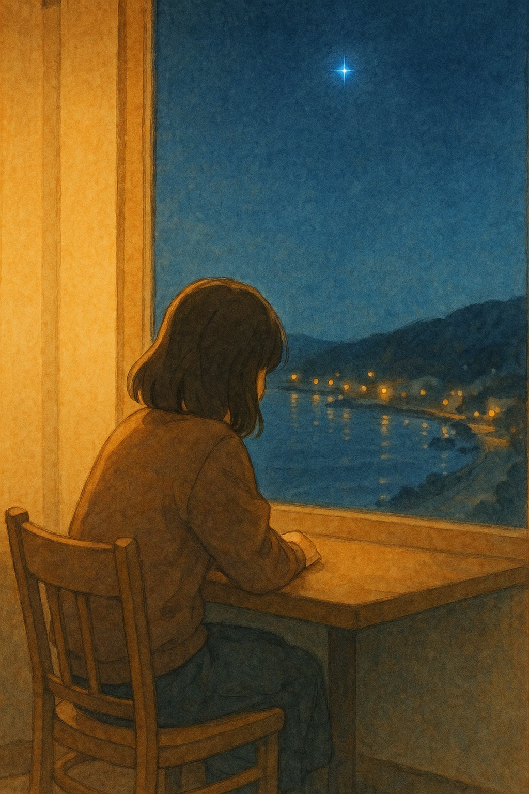

§1 · Side-by-Side Overview — Resonance vs Attraction
W1-v3 Resonance
resonance
F1 5s ✦
F2 5s
F3 5s ✦
F4 5s
F5 10s ✦

✦
F1

∅
F2

✦
F3

∅
F4

✦
F5 (10s)
breathing gap: 40% (10s / 30s)
subtitle offset: +1.0s
dissolve: 1.0s
Ken Burns: 0.3x
subtitle opacity: 0.7 / thin weight
aspect ratio: 3:4
intent: emotional residue
끝난 후에도 감정이 남아있는 경험
끝난 후에도 감정이 남아있는 경험
W1-S Attraction
attraction_social
F1 4s ✦
F2 3s
F3 3s ✦
F4 3s
F5 8s ✦
HOOK
✦
F1
∅
F2
✦
F3
∅
F4
CURIOSITY
✦
F5 (8s)
breathing gap: 28.5% (6s / 21s)
subtitle offset: +0.3s
dissolve: 0.7s
Ken Burns: 0.4x
subtitle opacity: 0.9 / regular weight
aspect ratio: 9:16
intent: curiosity / save / follow
다 보기 전에 저장하고 싶어지는 경험
다 보기 전에 저장하고 싶어지는 경험